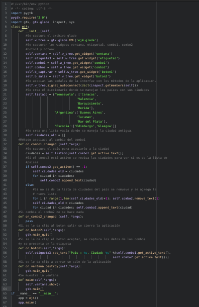

Desarrollo de aplicaciones gráficas con python+gtk+glade. Parte 3
Posted on Wed 17 June 2009 in Tutorial Python • 1 min read
Ahora se mostrará como usar el widget combobox. La idea es mostrar una lista de países en el primer combo y cuando este cambie, se cambie la lista de ciudades con respecto a los países.
La interfaz desarrollada con glade se colocan 2 combobox, 1 etiqueta y 2 botones. El primer combobox contiene los países y se agrega desde el glade, el 2do combobox se deja en blanco manejandose vía python. En la siguiente figura se muestra la interfaz en glade.
Se muestra la interfaz creada con glade en la siguiente figura:

El código del programa es el siguiente:

Al ejecutar el programa se muestra lo siguiente:

Luego se selecciona el país que se tiene Venezuela, Argentina y Escocia. Se cambia cada vez el país y se selecciona la ciudad, luego se le da clip al boton aceptar apareciendo en la etiqueta el país y la ciudad.


El código de la aplicación lo pueden descargar de github en el siguiente enlace.
===
¡Haz tu donativo! Si te gustó el artículo puedes realizar un donativo con Bitcoin (BTC) usando la billetera digital de tu preferencia a la siguiente dirección: 17MtNybhdkA9GV3UNS6BTwPcuhjXoPrSzV
O Escaneando el código QR desde billetera: